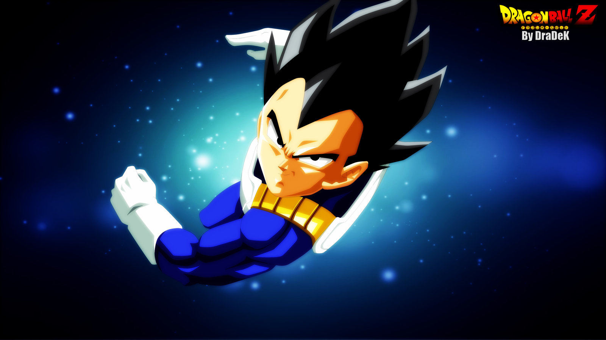
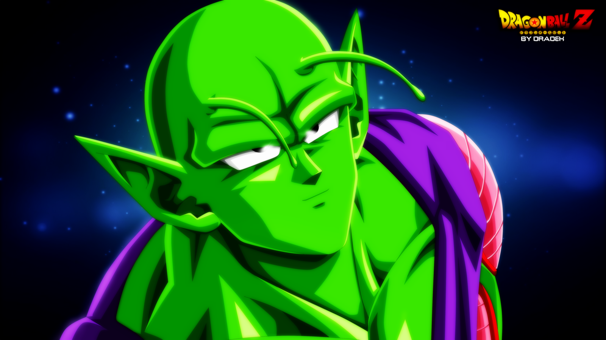
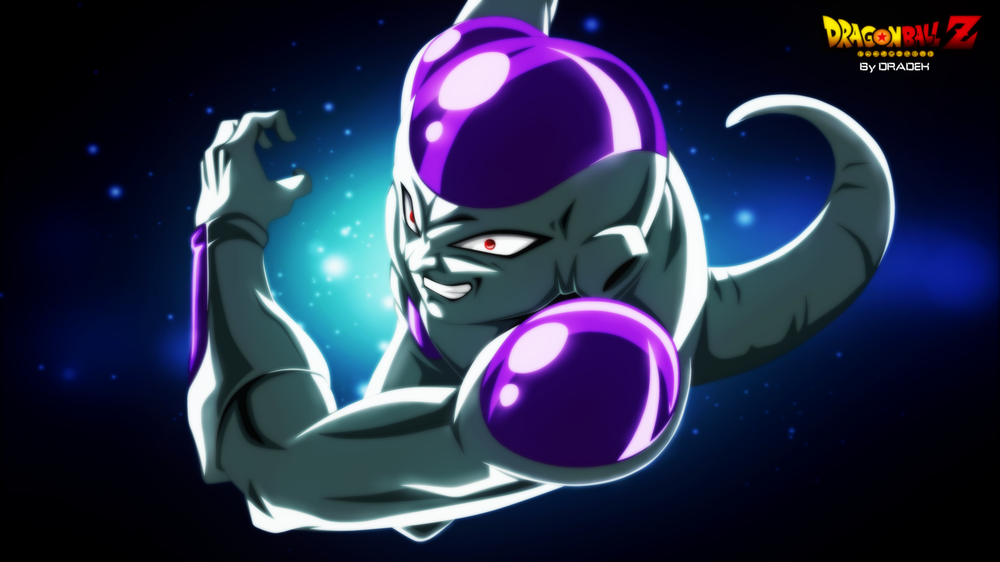
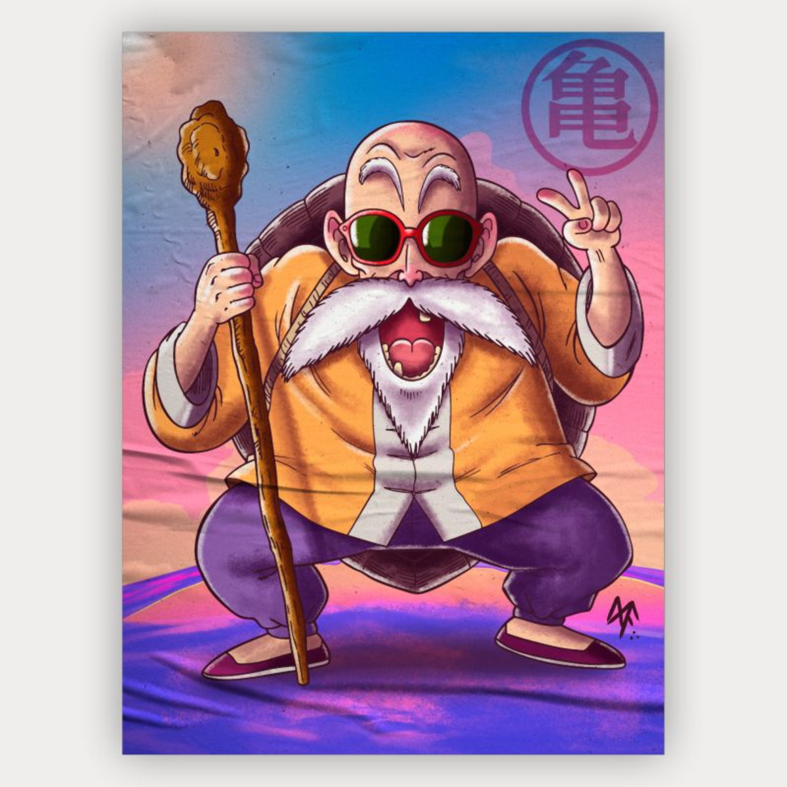
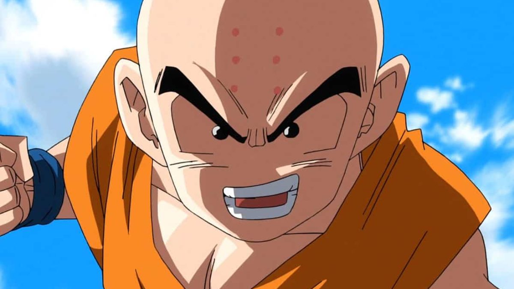

Personagens:
- Goku 
- Vegeta 
- Piccolo 
- Freeza 
- Mestre Kame 
- Kuririn

Dragon Ball Z (ドラゴンボールZ Doragon Bōru Zetto?) (geralmente abreviado como DBZ) foi uma série de animação produzida pela Toei Animation. Baseada na série de mangá Dragon Ball escrita por Akira Toriyama, Dragon Ball Z corresponde aos volumes 17 ao 42 do mangá que foi publicado na revista, Weekly Shonen Jump, de 1988 a 1995, e estreou no Japão na Fuji TV em 26 de abril de 1989, e terminou dia 31 de janeiro de 1996 com o total de 291 episódios, antes de ser dublada em diversos territórios ao redor do globo, incluindo Estados Unidos, Austrália, Europa, Índia e América Latina. A série já foi exibida em mais de 80 países ao redor do mundo.
Saiba MaisProdução da História: O título foi escolhido pelo autor do anime Akira Toriyama. Z foi usado no anime para separar a infância e a vida adulta do protagonista da série Goku outros nomes estavam em pauta antes de "Z" ser escolhido, sendo eles: Dragon Ball: A Aventura de Gohan, New Dragon Ball, Dragon Ball 2, Wonder Boy Dragon Ball e Dragon Ball 90.
Sua história se divide em quatro sagas, ao longo da série podemos ver o crescimento dos personagens e o desenvolvimento de seus poderes, também o surgimento de novas raças como os Saiyajins e suas transformações. O enredo é situado 5 anos após o final da série anterior, com Goku já adulto, casado com Chichi e os dois têm um filho chamado Gohan, ele conhece o seu irmão Raditz que o informa que ambos são membros de uma raça extraterrestre chamada Saiyajins (サイヤ人, Saiya-jin), esta raça enviou Goku ainda um bebê para o Planeta Terra, com o objetivo de conquistá-la, mas após aterrissar ele cai em um abismo e se esquece de sua missão. Ele se nega a ajudar Raditz e confronta ele e outros inimigos, ele conhece Vegeta, o príncipe da raça Saiyajin, que se torna seu rival e mais tarde seu aliado, Goku cria muitos inimigos ao longo da série como o tirano galáctico Freeza, o responsável pela destruição dos Saiyajins e trava uma batalha no Planeta Namekusei se transformando em Super Saiyajin e derrota-o, mas Freeza sobreviveu a isto graças ao seu pai Rei Cold, os dois vão para a Terra em busca de Goku, ao chegarem lá se deparam com um jovem que afirma que Goku não é o único a se transformar em Super Saiyajin, em poucos segundos ele elimina o pequeno exército de Freeza, o próprio Freeza e seu pai, Rei Cold. Três horas depois Goku chega o jovem o avisa que em três anos eles enfrentarão dois seres muito poderosos. Anos depois um grupo de Androides do exército Força Red Ribbon, aparecem buscando eliminar Goku, mais tarde surge uma criatura chamada Cell, que procura absorver os Androides, ao fazer isso seus poderes aumentam e organiza um torneio, que irá decidir o destino da Terra, porém Gohan que se transformou em Super Saiyajin 2 vence o combate. Sete anos mais tarde, Goku entra em outra batalha pelo bem do universo desta vez, contra um inimigo mágico chamado Majin Boo, com a ajuda de Vegeta e dos Guerreiros Z, ele destrói Kid Boo, e a parte boa do mesmo se une a eles. Dois anos após a derrota de Kid Boo, acontece os eventos de Dragon Ball Super (separado de Dragon Ball Z). Dez anos depois, em outro Torneio de Artes Marciais, Goku encontra Oob a reencarnação de Boo, depois de lutar contra ele e ver seu potencial, Goku o leva embora em uma jornada para treiná-lo como próximo protetor da Terra, acabando a série Dragon Ball Z e iniciando Dragon Ball GT.
"Kamehameha".
A famosa frase de Goku em Dragon Ball Z
<main> define o conteúdo principal dentro do
<body> em seu documento ou aplicação. Entende-se como conteúdo principal aquele
relacionado diretamente com o tópico central da página ou com a funcionalidade central da aplicação. O mesmo
deverá ser único na página, ou seja, dentro do elemento <main> não deverão ser
incluidas seções da página que sejam comuns a todo o site ou aplicação, tais como mecanismos de navegação,
informações de copyright, logotipo e campos de busca (a não ser, é claro, caso a função principal do documento
seja fazer algum tipo de busca).